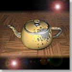

 The Modelling of Natural Imperfections and An Improved Space Filling Curve Halftoning Technique
,
Master thesis, The Chinese University of Hong Kong, 1994.Abstract
- In this thesis, we tackle two computer graphics problems: 1) The modelling of natural imperfections and, 2) Improvement on the clustered-dot space filling curve halftoning method.
- The modelling of natural imperfections is a technique to introduce blemishes onto the object surfaces in order to achieve the goal of realism. In this project, we present a new framework of modelling of such surface imperfections. The framework consists of two phases: Firstly, a tendency value, which represents the potential of a surface point of interest being imperfect (e.g. with scratches, rusted, etc.), is calculated based on the object orientation to all abstract imperfection sources. It is then adjusted by the external factors, like surface exposure, scraping and surface curvature, etc. Secondly, a chaotic imperfection pattern is generated according to this calculated tendency. We have applied this framework to model two very common kinds of imperfections: dust accumulation and scratching. Some promising images are resulted.
- Two common problems exist in most of the existing digital halftoning techniques. They are the presence of annoying visual artifacts and ink smudging which introduces intensity error to the final appearance of the halftone. In 1991, a clustered-dot space filling curve halftoning technique was proposed. It reduces both problems effectively. However, a new problem arises. It suffers from excessive blurring when the cluster size increases. In this thesis, we propose two improvements, selective precipitation and adaptive clustering, on the former method to minimize these blurring effects. Selective precipitation outputs the sequence of black dots at the position where the sum of the gray values of the corresponding pixels on the original image is the highest. Adaptive clustering uses a 1D edge detection filter to find the sharp edges and adaptively adjust the size of the clusters so that they would not cross over the sharp edges. Hence, the sharpness of fine details is retained without the need of image pre-filtering. By calculating a Gibbs measure and the length of the perimeter of the resulting black pixels as objective image quality measures, we have shown that images dithered by our methods do have better quality than the one produced by the original clustered-dot space filling curve halftoning technique.
Download Thesis
- Acrobat: thesis.pdf (3.2MB)
Related Publications